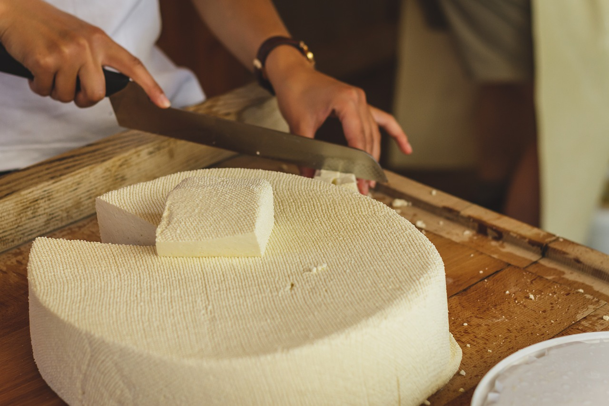
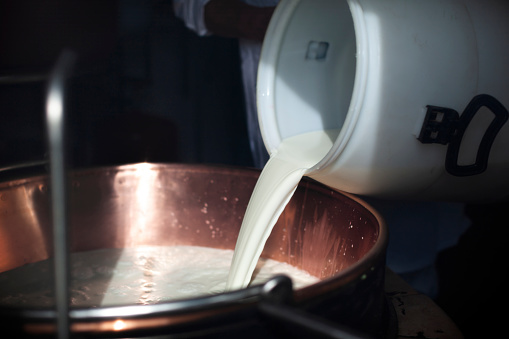
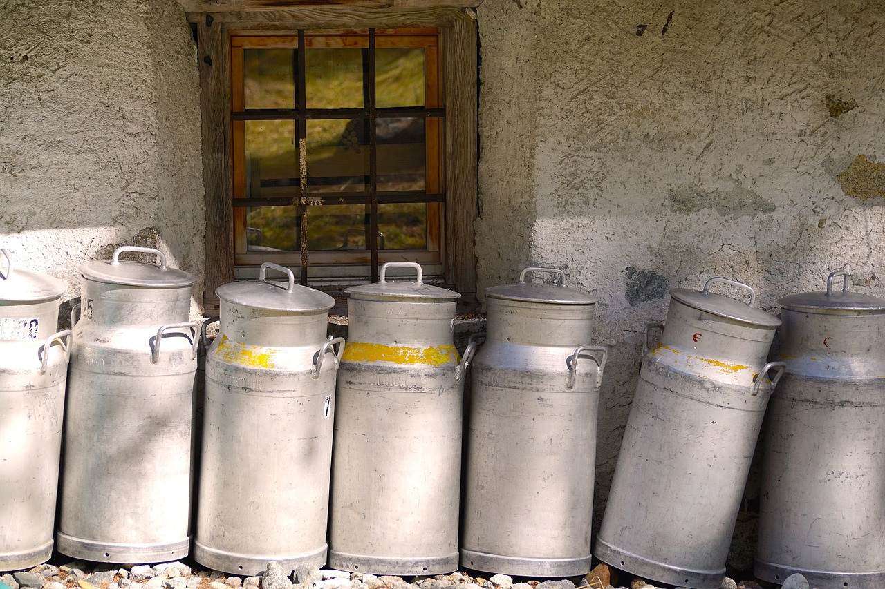
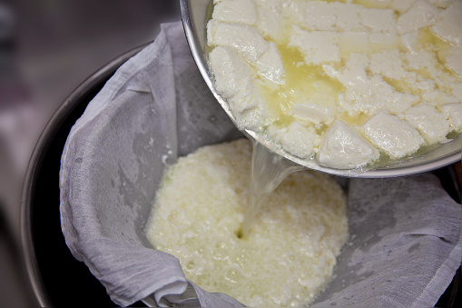
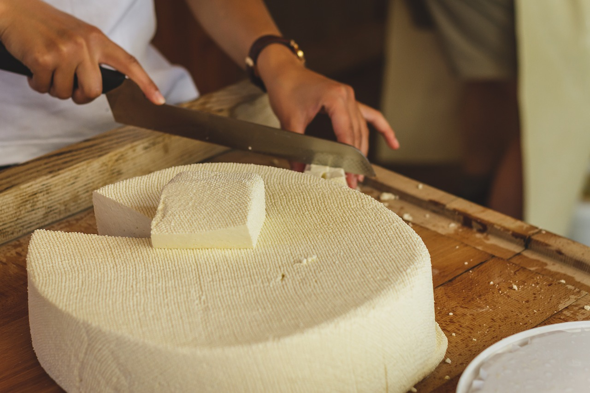
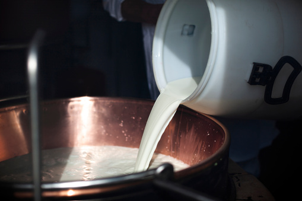
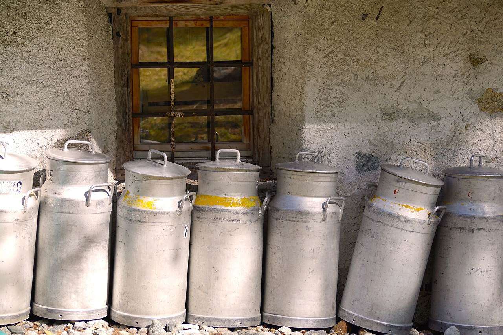
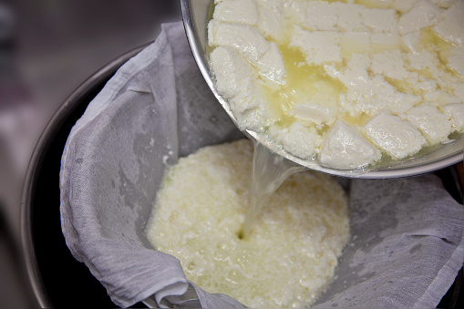
チーズ職人養成学校「チーズアカデミーFUKUOKA」🧀
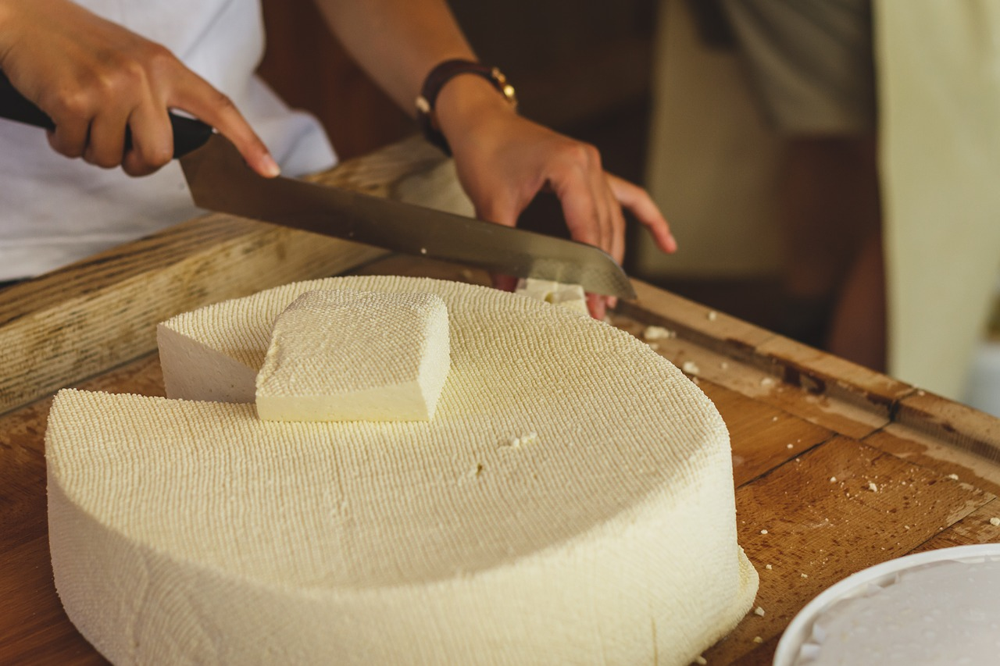
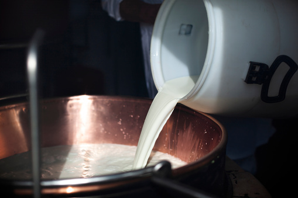
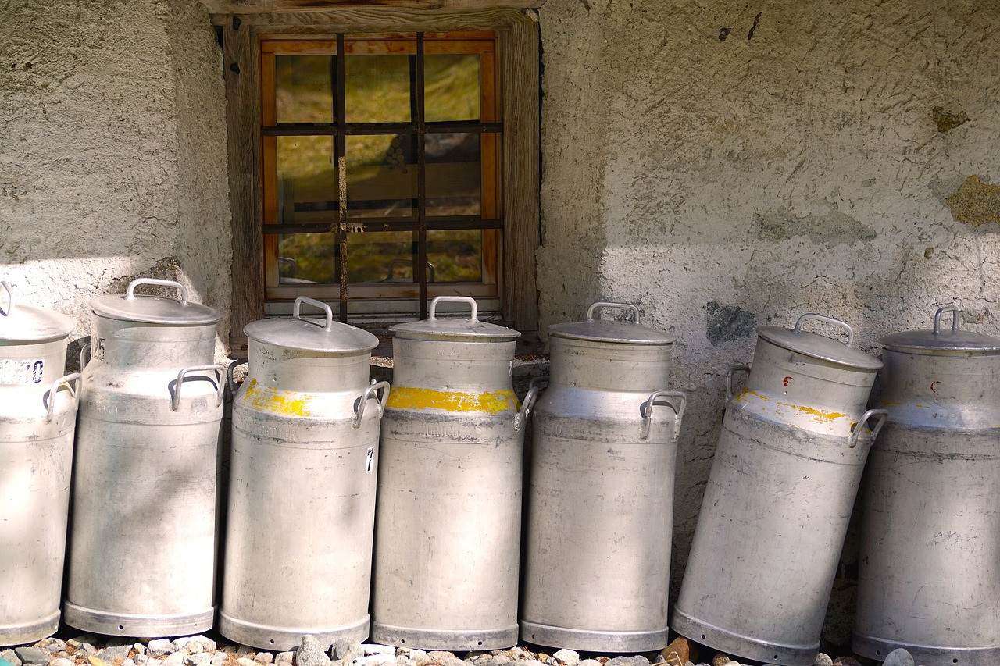
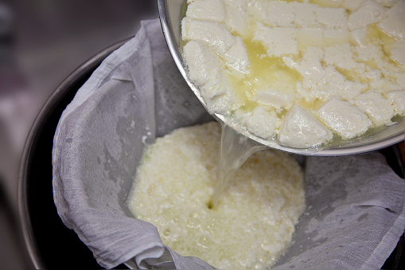
チーズアカデミーにつて
チーズアカデミーは，チーズ職人養成学校です．
チーズの素晴らしさを，自給自足を通じて，できるだけ多くの人に知っていただきたい．
そして，食卓にはいつもチーズがあった，あの頃の当たり前をこの手で取り戻したい．
そんな思いから，チーズ職人養成学校「チーズアカデミーFUKUOKA」は歩みを始めています．
卒業後，チーズ自給自足のバックアップはもちろんのこと，
チーズ職人への就職・転職もサポートします．
未経験からでもスタートができるよう，カリキュラムは多くの
専門家や現役チーズ職人のアドバイスのもと，作られました．

チーズアカデミーでは，本格的な農園を使った実地研修を行うことができます．プロとして活躍するチーズ職人も使用するような，広大で環境も整った農園を余すところなく使い，卒業時には本格的なチー ズを自分の力で作れる実践力の養成を目指します．
チーズ作りには，しっかりとした食に関する知識が欠かせません．チーズアカデミーでは，一流講師陣による，チーズ作りに必要ないろはを余すところなく学べます．チーズそのものでなく，栄養学全般を学ぶことも可能ですので，チーズ以外への展開も夢ではないでしょう．

チーズアカデミーでは最後の2ヶ月間で卒業制作を実施．卒業制作として，チーズ作りを実際に行います．卒業後，一般参加によるティスティング審査があるため，作り手の目線だけでなく，消費者の目線から，卒業制作作品としてのチーズを，しっかりと評価いただくことができます．
ニュース

2018/11/24
チーズアカデミー卒業生のコスゲさんによるチーズだけをふんだんに使用した話題のピザ屋「Kosuge Pizza」が天神でオープンしました！
2018/11/24
チーズアカデミー卒業生のコスゲさんによるチーズだけをふんだんに使用した話題のピザ屋「Kosuge Pizza」が天神でオープンしました！
2018/11/24
チーズアカデミー卒業生のコスゲさんによるチーズだけをふんだんに使用した話題のピザ屋「Kosuge Pizza」が天神でオープンしました！
会社情報
学校名
チーズアカデミーFUKUOKA
事務所所在地
〒810-0041 福岡県福岡市中央区大名1丁目3-41 プリオ大名ビル1F
TEL
000-000-0000
FAX
999-999-9999
dummy@cheeseacademy.tokyo
説明会お申し込み・お問い合わせ
ぜひ1度，足を運んでみませんか．説明会は随時開催中．
その他，お問い合わせもお気軽にどうぞ．お待ちしております．
チーズアカデミーは実際には存在しません．
間違っても問い合わせしないようお願いいたします．